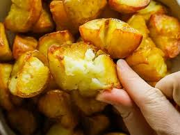

Rosemary Roast Potatoes

Description
Crispy, herby, delicious
Learn how to bake potatoes with this simple and delicious recipe for rosemary-kissed roasted red potatoes.
30 mins total for perfect roasties
Ingredients
- 2 pounds red potatoes, cut into quarters
- 2 tablespoons vegetable oil
- 1 teaspoon salt
- ½ teaspoon freshly ground black pepper
- ½ teaspoon dried rosemary, crushed
Directions
- Preheat the oven to 450 degrees F (250 degrees C) and gather all ingredients.
- Place potatoes in a large roasting pan and toss with oil, salt, pepper, and rosemary until evenly coated.
- Spread out potatoes in a single layer.
- Bake, stirring occasionally, in the preheated oven until tender, about 20 minutes. Serve warm.
- Serve hot and enjoy!